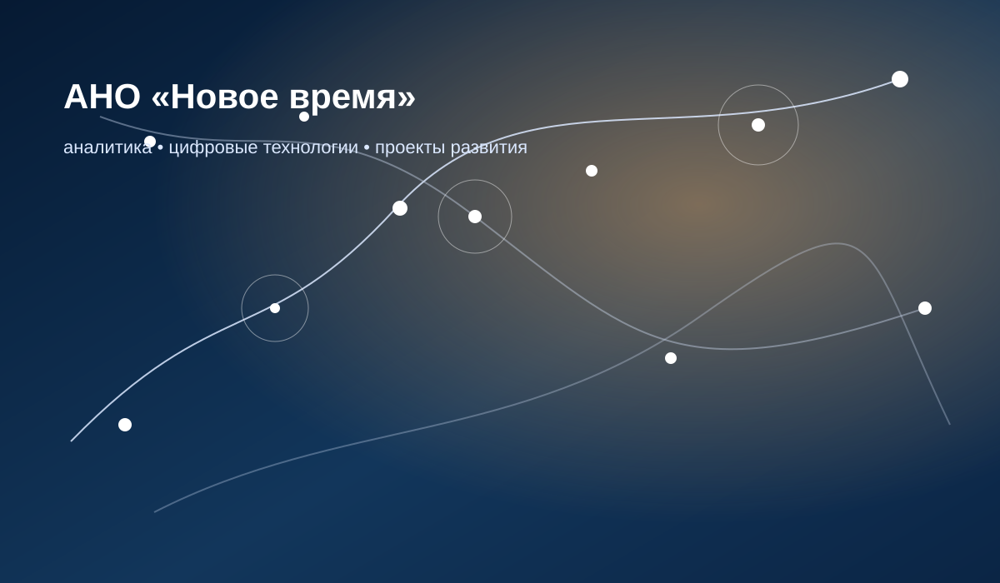
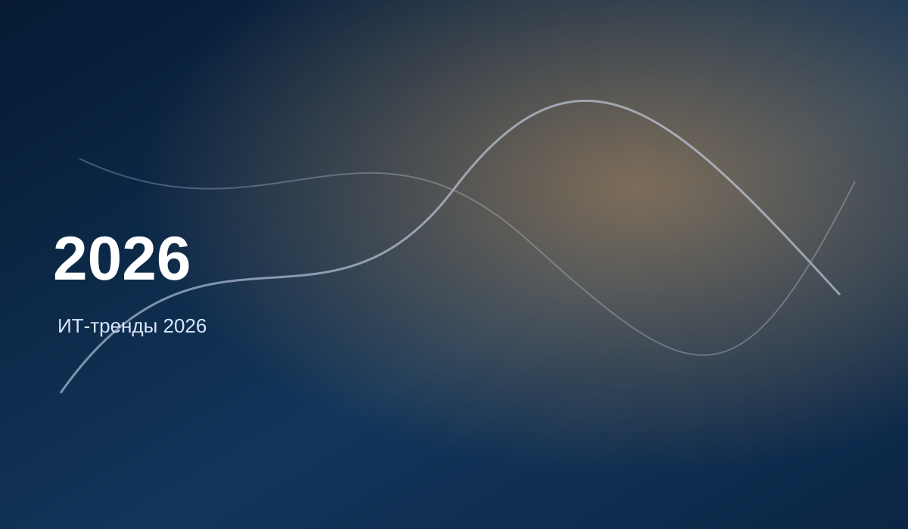
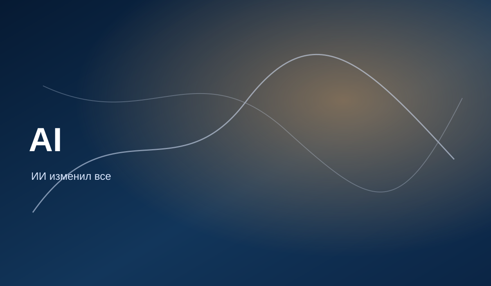
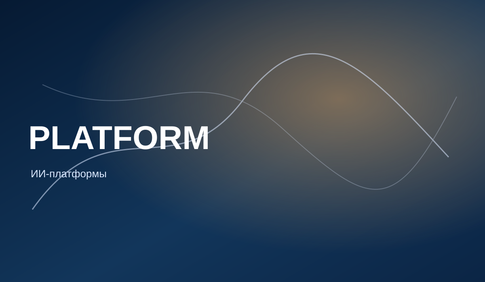
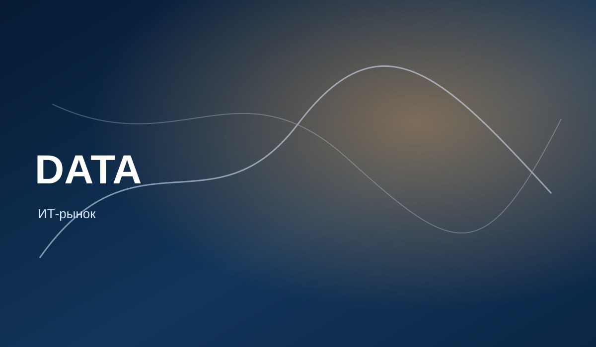

01
Аналитические обзоры
Готовим материалы по ключевым технологическим темам: ИИ, облака, безопасность, инфраструктура, платформы, цифровые стратегии.

АНО «Новое время» готовит аналитические материалы о цифровой трансформации, искусственном интеллекте, облачных платформах, кибербезопасности и технологической инфраструктуре.
АНО «Новое время» — некоммерческая организация, которая занимается аналитическими, просветительскими и проектными инициативами в сфере цифрового и технологического развития.
Мы работаем с темами, где простого пересказа новостей недостаточно: государственные цифровые платформы, облачные стратегии, искусственный интеллект, кибербезопасность, дата-центры, технологическая инфраструктура и новые модели управления.
Наша цель — делать сложные процессы понятнее, показывать связи между технологиями, экономикой, регулированием и организационными изменениями, а также формировать основу для содержательных решений и сотрудничества.
Готовим материалы по ключевым технологическим темам: ИИ, облака, безопасность, инфраструктура, платформы, цифровые стратегии.
Сопоставляем международный опыт, подходы государств, компаний и технологических экосистем.
Собираем важные события, цифры, прогнозы и выводы в удобный формат для быстрого погружения.
Открыты к запуску и поддержке проектов, связанных с цифровым развитием, просвещением и экспертной работой.
Мы смотрим на технологическое развитие не как на набор модных слов, а как на связанную систему: инфраструктура, данные, платформы, безопасность, регулирование, организации и люди.
Облачные стратегии, государственные технологические платформы, модели суверенной инфраструктуры и международный опыт цифрового управления.
ИИ-агенты, AI-native development, управление ИИ, специализированные модели, ИИ-платформы и влияние ИИ на разработку, управление и безопасность.
Публичные и частные облака, PaaS, IaaS, SaaS, гибридные модели, мультиоблачность и переход к ИИ-ориентированным архитектурам.
Облачная безопасность, shared responsibility, SaaS-риски, эволюция защитных платформ, атаки на инфраструктуру и новые риски эпохи ИИ.
Рост дата-центров, энергопотребление ИИ, инфраструктурные ограничения, энергетические риски и связь цифровизации с физическими ресурсами.
Ключевые показатели рынка ИКТ, облачных сервисов, динамика IaaS/PaaS/SaaS, прогнозы и структура технологического спроса.
Стартовая подборка материалов центра: технологические тренды, ИИ-платформы, облачная безопасность, государственные облачные стратегии и инфраструктурные ограничения цифровизации.

Ключевые технологические направления ближайших лет: AI-native development platforms, AI super computing, confidential computing, мультиагентные системы, специализированные языковые модели, digital provenance, AI security platforms и геопатриация.
Читать текст
Обзор перехода от обычной цифровизации к ИИ-центричной технологической архитектуре: ИИ-агенты, AI governance, регулирование, разработка ПО, платформенная инженерия, инфраструктура и кибербезопасность.
Читать текст
Разбор трех моделей платформ: классическая платформа, платформа с ИИ-компонентами и платформа, изначально построенная с учетом ИИ.
Читать текстКлючевые технологические направления ближайших лет: AI-native development platforms, AI super computing, confidential computing, мультиагентные системы, специализированные языковые модели, digital provenance, AI security platforms и геопатриация.
Читать текстОбзор перехода от обычной цифровизации к ИИ-центричной технологической архитектуре: ИИ-агенты, AI governance, регулирование, разработка ПО, платформенная инженерия, инфраструктура и кибербезопасность.
Читать текстРазбор трех моделей платформ: классическая платформа, платформа с ИИ-компонентами и платформа, изначально построенная с учетом ИИ.
Читать текстОбзор того, как рост дата-центров и ИИ-нагрузок влияет на энергопотребление, инфраструктуру и развитие цифровой экономики.
Читать текст
Обзор рисков облачной среды: рост объемов данных, крупнейшие утечки, атаки на инфраструктуру, эволюция подходов к защите, SaaS-безопасность и shared responsibility.
Читать текст
Сравнительный обзор облачных стратегий США, Италии, Сингапура и ОАЭ: от Cloud First к гибридным, мультиоблачным и суверенным моделям.
Читать текст
Сводный обзор показателей российского ИКТ-рынка и облачных сервисов: динамика публичного облака, IaaS, PaaS, SaaS и прогнозы развития.
Читать текстАНО «Новое время» открыта к сотрудничеству с экспертами, авторами, организациями, образовательными и общественными инициативами, которым важна содержательная работа с темами технологического развития.
По вопросам сотрудничества, публикаций и проектных инициатив: